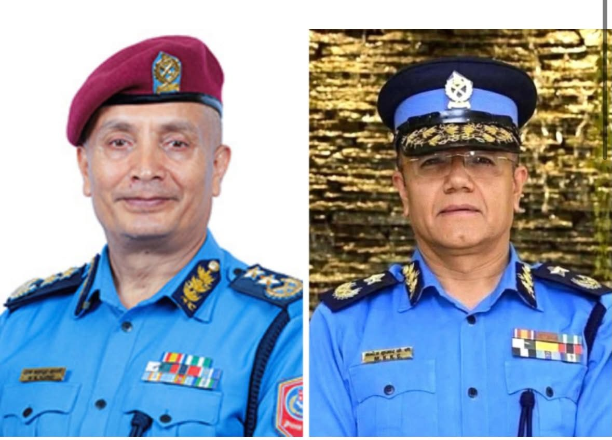

नेपाल प्रहरीको नेतृत्व परिवर्तन : मनोज केसी नयाँ आईजीपी नियुक्त, दानबहादुर कार्की प्रधानमन्त्रीको सुरक्षा सल्लाहकार
काठमाडौं, ४ नोभेम्बर २०२६। नेपाल सरकारले नेपाल प्रहरीको नेतृत्व परिवर्तन गर्दै प्रहरी अतिरिक्त महानिरीक्षक (एआईजी) मनोजकुमार केसीलाई प्रहरी महानिरीक्षक (आईजीपी) नियुक्त गर्ने निर्णय गरेको छ। आज बसेको…

काठमाडौं, ४ नोभेम्बर २०२६।
नेपाल सरकारले नेपाल प्रहरीको नेतृत्व परिवर्तन गर्दै प्रहरी अतिरिक्त महानिरीक्षक (एआईजी) मनोजकुमार केसीलाई प्रहरी महानिरीक्षक (आईजीपी) नियुक्त गर्ने निर्णय गरेको छ।
आज बसेको मन्त्रिपरिषद् बैठकले वर्तमान आईजीपी दानबहादुर कार्कीलाई जिम्मेवारीबाट हटाउँदै केसीलाई नेपाल प्रहरीको नयाँ महानिरीक्षक नियुक्त गर्ने निर्णय गरेको हो।
सरकारको निर्णयअनुसार निवर्तमान आईजीपी कार्कीलाई प्रधानमन्त्रीको सुरक्षा सल्लाहकारको जिम्मेवारी दिइएको छ।
यस निर्णयसँगै नेपाल प्रहरीको नेतृत्वमा फेरबदल भएको छ। प्रहरी संगठनको नेतृत्व परिवर्तन गर्ने सरकारको निर्णयले सुरक्षा प्रशासन तथा प्रहरी संगठनभित्र नयाँ नेतृत्वको सुरुवात गरेको छ।
नवनियुक्त आईजीपी केसीले आगामी दिनमा प्रहरी संगठनको व्यावसायिकता, सुशासन, अपराध नियन्त्रण र नागरिक सुरक्षालाई कसरी अगाडि बढाउँछन् भन्ने विषय चासोको रूपमा हेरिएको छ।